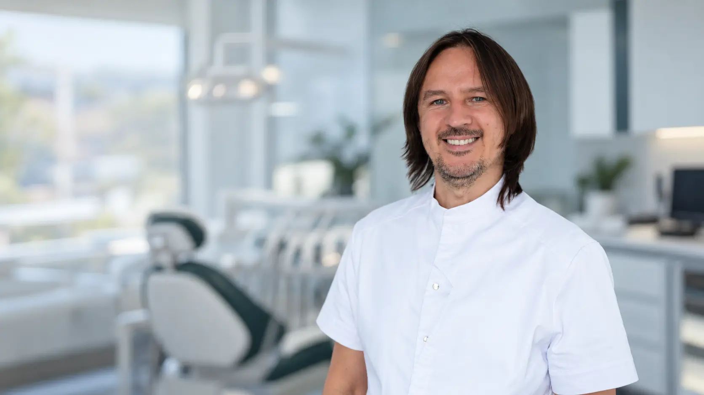

Смотреть подробнее ↗
Смотреть подробнее ↗01
Терапевтическое направление

Стоматолог-ортопед · хирург-имплантолог
Помогаю разобраться в причине проблемы и выстроить лечение — от диагностики до окончательного восстановления зубов.
Обсудить лечение ↗Мой подход
«Перед планированием лечения я задаю простой вопрос: какого результата вы хотите от нашей работы?»
Только после этого мы проводим диагностику, обсуждаем возможные решения и поэтапно выстраиваем лечение. Мне важно, чтобы пациент понимал весь путь, участвовал в обсуждении и принимал осознанное решение.
Как строится лечение
Не набор отдельных процедур, а последовательный путь, в котором понятна задача каждого этапа.
Моя сильная сторона
Фотографии, компьютерная томография и 3D-моделирование помогают подробно разобрать клиническую ситуацию, показать её пациенту и заранее спланировать результат.
Основные направления
Я объединяю терапевтический, ортопедический и хирургический этапы в один согласованный план.
Смотреть подробнее ↗Терапевтическое направление
 Смотреть подробнее ↗
Смотреть подробнее ↗Коронки и протезирование
 Смотреть подробнее ↗
Смотреть подробнее ↗Один зуб или весь зубной ряд
 Смотреть подробнее ↗
Смотреть подробнее ↗Хирургическое направление
Честно о лечении
«Мой главный принцип — не обманывать пациента»
Я честно рассказываю о состоянии зубов, возможностях лечения, ограничениях и рисках. Пациента не нужно запугивать или уговаривать — ему нужно помочь разобраться в ситуации и принять осознанное решение.
Мне важно, чтобы пациент понимал каждый этап лечения и принимал активное участие в обсуждении. Это помогает выстроить реалистичный план и вместе двигаться к результату.
Комплексный подход
Комплексное лечение не означает, что один врач должен делать всё. Ортодонтическое и пародонтологическое лечение, профессиональную гигиену и отдельные эстетические процедуры я передаю профильным специалистам. Моя задача — объединить направления в последовательный план и отвечать за его общую логику.
Профессиональный путь
Зажмите и перетащите точку по линии · свайпните · прокрутите колёсиком · или выберите дату
Место приёма
Москва, Спартаковская улица, 25/28с1.
Приём проводится в клинике по предварительной записи.
На звонок отвечает Вадим Фаритович.